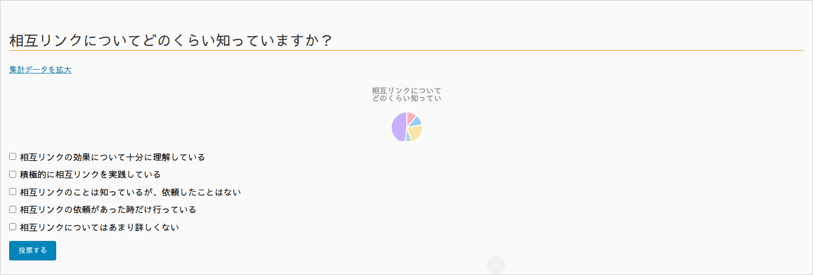

表示と投票のしくみ
アンケートを記事に表示する方法と、来訪者が投票したときの動き、そして重複投票を防ぐしくみを解説します。
ショートコードで設置する
アンケートを記事や固定ページに表示するには、ショートコードを本文に貼り付けます。
[tk_poll id="123"]
id には、表示したいアンケートの ID を指定します（編集画面の投票設定欄に表示されるものをコピーするのが確実です）。ブロックエディタなら「ショートコード」ブロック、クラシックエディタなら本文にそのまま貼り付ければ表示されます。
プラグインは各アンケートに専用ページ /datasets/detail-123/ を自動生成します。単体ページで見せるだけならショートコードは不要で、既存記事の中に埋め込みたいときにショートコードを使います。
投票フォームの表示
ショートコードを設置すると、質問文・選択肢・「投票する」ボタンが表示されます。まだ投票していない来訪者には、投票前でも現在の傾向がうっすら分かるプレビューの円グラフが一緒に表示されます。

- 複数選択のアンケートはチェックボックス、単一選択のアンケートはラジオボタンで表示されます。
- 選択して「投票する」を押すと、集計に反映され、結果の円グラフに切り替わります。
- 「集計データを拡大」から、大きな円グラフと集計表を開けます（詳しくはグラフ機能）。
重複投票を防ぐしくみ
同じ人が何度も投票するのをできるだけ防ぐため、2つの方法を組み合わせています。
- IP アドレス：投票した端末の IP アドレスを記録し、同じ IP からの再投票を制限します。
- Cookie：投票するとブラウザに Cookie を保存し、同じブラウザからの再投票を制限します。
重複投票防止は「完全」ではありません。VPN の利用、シークレットモード、複数端末などで回避されることは技術的に避けられません。厳密な本人確認が必要な用途には向きません。
全員にもう一度投票してもらいたいときは、基本設定ページの「投票制限の解除」でリセット日時を更新します（基本設定ガイド参照）。
リバースプロキシ／CDN を使っている場合
Cloudflare などの CDN やリバースプロキシを経由していると、すべてのアクセスがプロキシの IP アドレスに見えてしまい、全員が同一 IP と判定されて2人目以降が投票できなくなることがあります。
その場合は、wp-config.php に次の1行を追加して、プロキシが付与する実クライアント IP ヘッダー（X-Forwarded-For / CF-Connecting-IP）を信頼する設定を有効にしてください。
define( 'KASHIWAZAKI_POLL_TRUST_PROXY', true );
この設定は、信頼できるリバースプロキシ／CDN を経由している環境でのみ有効にしてください。プロキシを経由していない環境で有効にすると、クライアントが送るヘッダーを偽装され、重複投票防止を回避される恐れがあります。